patty

When we first purchased our home, a former bayman’s cottage in a small town on the south shore of Long Island, it had been a bit “re-muddled,” but, thankfully, had retained its lovely wood floors and my beloved multi-paned and patterned windows.
Over the years we’ve done some tweaking and restoration, adhering to our philosophy of using natural or “real” materials whenever possible (No vinyl siding here, please!) This probably explains to a degree my affinity for your gorgeous linen items!
Thanks so much for sharing your beautiful handiwork with all of us! ~ Patty
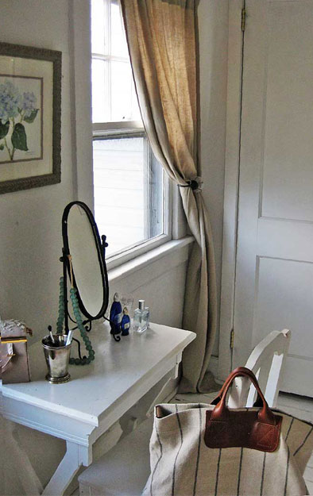
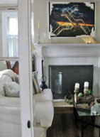
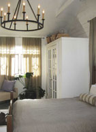
 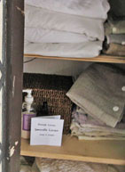
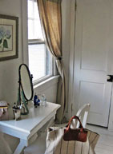
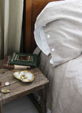
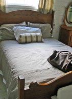
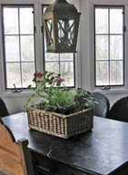
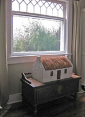
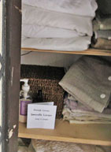
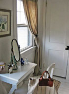
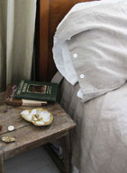
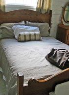
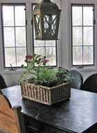
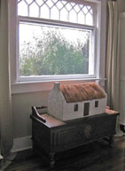